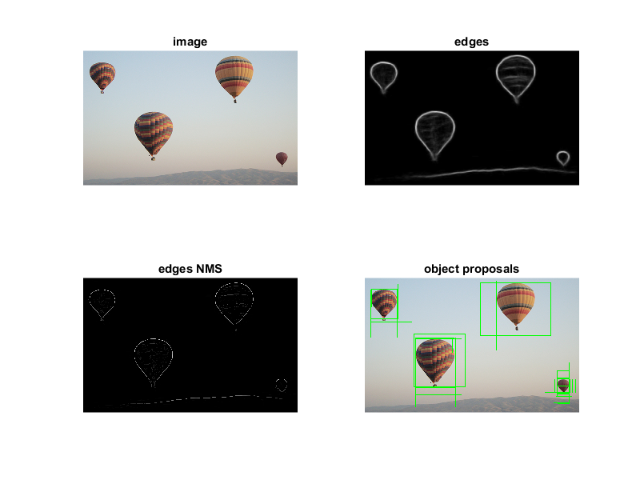

Structured Edge Detection demo
This sample demonstrates structured forests for fast edge detection, and edgeboxes.
The structered edge demo requires you to provide a model. This demo downloads a model from the opencv_extra repository on Github.
Sources:
Contents
Load image
read RGB image
img = cv.imread(fullfile(mexopencv.root(),'test','balloon.jpg'), 'Color',true); assert(~isempty(img), 'Cannot read image file'); % convert to floating-point in [0,1] range img = single(img) / 255;
Create object
we load a pre-trained model
modelFilename = fullfile(mexopencv.root(),'test','model.yml.gz'); if exist(modelFilename, 'file') ~= 2 % download model from GitHub url = 'https://cdn.rawgit.com/opencv/opencv_extra/3.3.0/testdata/cv/ximgproc/model.yml.gz'; disp('Downloading model...') urlwrite(url, modelFilename); end tic pDollar = cv.StructuredEdgeDetection(modelFilename); toc
Elapsed time is 1.868493 seconds.
Detect edges
tic edges = pDollar.detectEdges(img); toc
Elapsed time is 0.058288 seconds.
convert grayscale [0,1] float image to 8-bit
e8u = uint8(edges * 255);
computes orientation from edge map
orientation_map = pDollar.computeOrientation(edges);
suppress edges
edges_nms = pDollar.edgesNms(edges, orientation_map);
generate object bounding box proposals using edges
ebx = cv.EdgeBoxes('MaxBoxes',30); boxes = ebx.getBoundingBoxes(edges_nms, orientation_map); out = cv.rectangle(img, boxes, 'Color',[0 255 0], 'LineType','AA');
Display result
figure('Position',[200 200 800 600]) subplot(221), imshow(img), title('image') subplot(222), imshow(e8u), title('edges') subplot(223), imshow(edges_nms), title('edges NMS') subplot(224), imshow(out), title('object proposals')